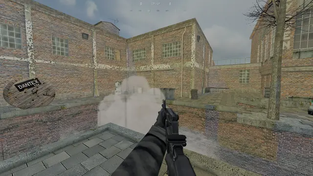
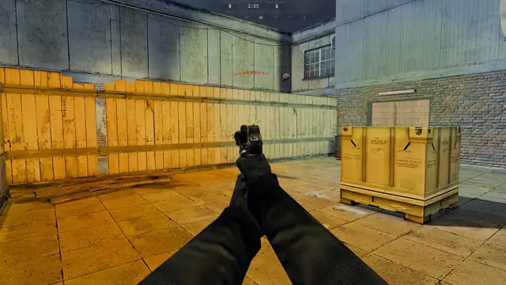
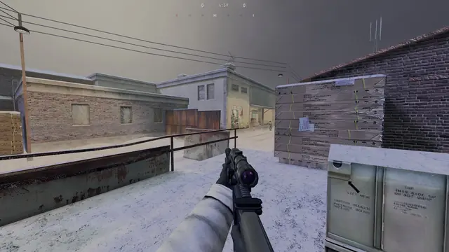
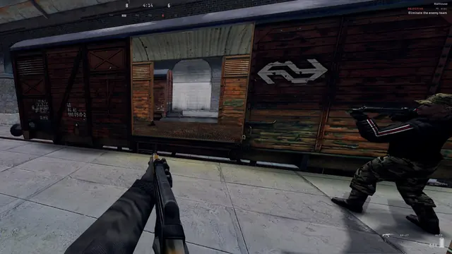
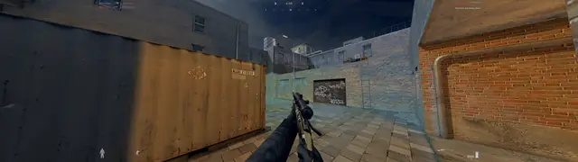
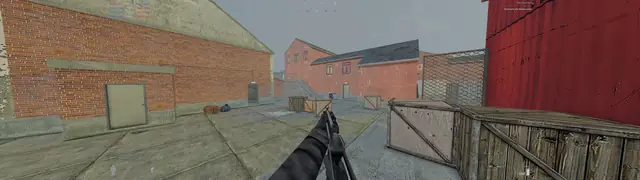
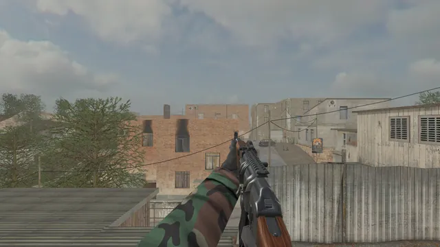

Media
Screenshots
Każdy obraz na tej stronie został uchwycony w grze na rendererze DirectX 12. Bez retuszu i bez poprawek.



















Prasa i twórcy
Otwórz pakiet prasowy
Potrzebujesz ich w pełnej rozdzielczości?
Pakiet prasowy zawiera bezstratne zrzuty, logo i zestawienie faktów. Używaj ich swobodnie w recenzjach, filmach i streamach.